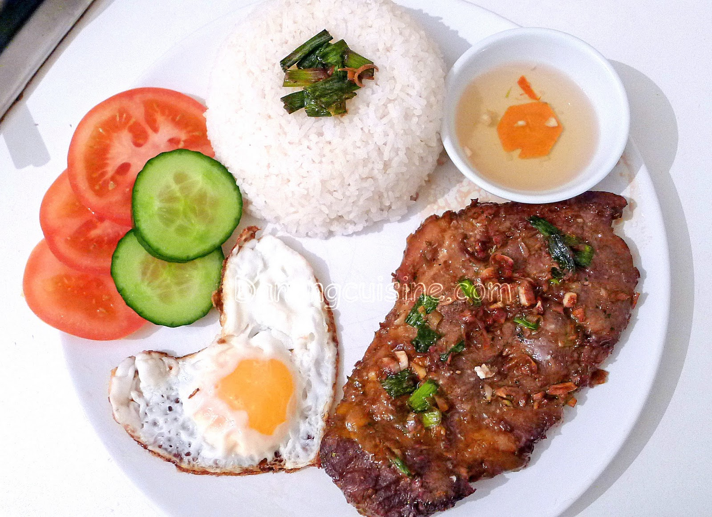

Com Tam (Vietnamese broken rice) is the quintessential Southern Vietnamese street food, traditionally featuring fractured rice grains that absorb flavors beautifully. The star of the dish is Suon Nuong - thinly sliced pork chops marinated in a fragrant, sweet-savory blend of lemongrass, garlic, and honey, grilled to smoky perfection. A complete platter is a masterclass in textures and temperatures: the warm, tender pork and fluffy broken rice are topped with a sunny-side-up egg and vibrant green scallion oil (mo hanh), then balanced by crisp cucumber slices, tomatoes, and tangy pickled carrots and daikon. Everything is tied together by a generous drizzle of spicy, sweet garlic fish sauce (nuoc cham), making every bite deeply flavorful and satisfying.
Use the back of a knife or a meat mallet to gently pound the pork chops so they tenderize and cook evenly. Mix the minced lemongrass, garlic, shallot, fish sauce, honey, oyster sauce, and 1 tbsp oil together. Coat the pork thoroughly and marinate in the fridge for at least 1 hour (overnight is even better).
Rinse the broken rice 2-3 times until the water runs clear. Cook it in a rice cooker or steam it. Because the grains are smaller, they require slightly less water than standard rice (usually a 1:1 or 1:1.1 ratio of rice to water). Once cooked, let it steam undisturbed for 10 minutes to get perfectly fluffy.
Heat a grill pan, outdoor grill, or cast-iron skillet over medium-high heat. Shake off excess marinade and cook the pork chops for about 5-6 minutes per side, turning only once, until they are beautifully charred and cooked through. Let the meat rest for 3 minutes before slicing.
While the meat rests, fry your eggs sunny-side-up in a splash of oil so the edges get crispy but the yolk remains runny. Quickly make the scallion oil by heating 3 tbsp of oil until shimmering and pouring it over your chopped green onions.
Mound a generous scoop of broken rice onto a plate. Brush it with the glossy scallion oil. Lay the sliced grilled pork chop and fried egg right next to the rice. Arrange your cucumber slices, tomato slices, and pickles around the plate. Serve with the Nuoc Cham on the side to drizzle over the entire plate!